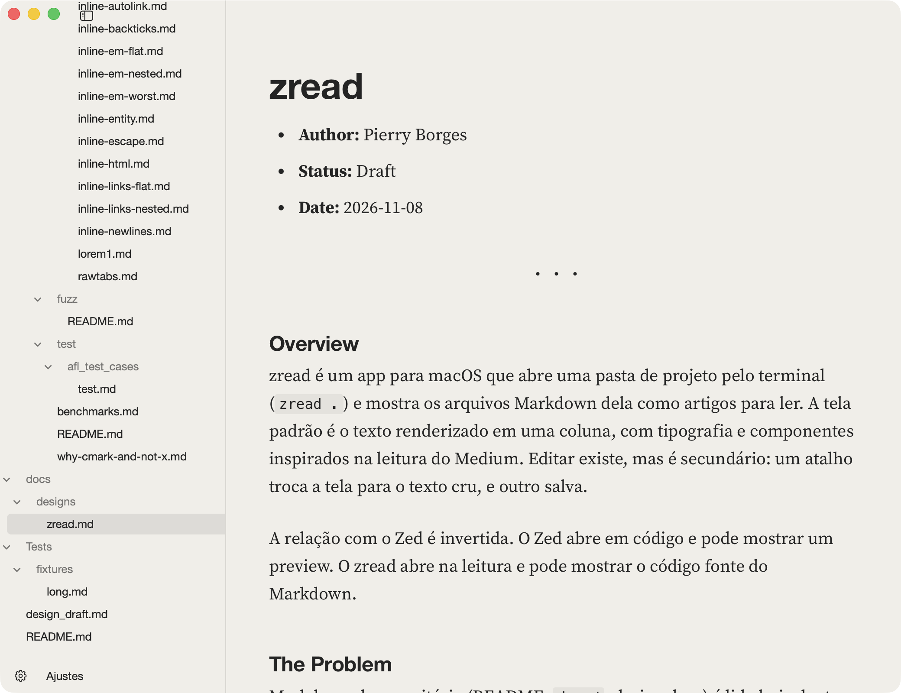
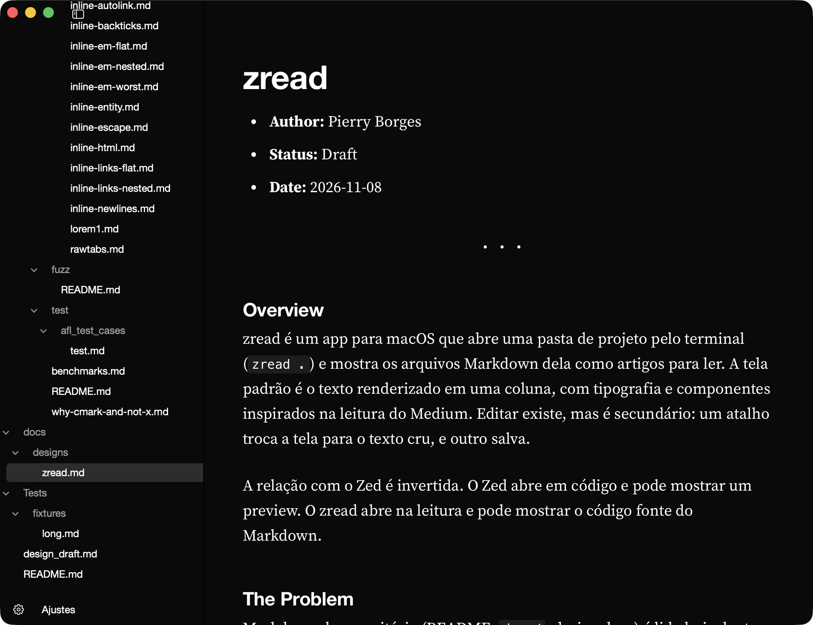

Como o deploy funciona
Cada merge na main gera uma imagem nova. O serviço só troca de versão depois que a verificação de saúde passa em todas as réplicas.
Se a verificação falhar, a versão anterior continua no ar.
make deploy ENV=stagingO zread é um app para Mac que abre direto no texto renderizado. Rode zread . em qualquer pasta e navegue pelo Markdown dela. Editar fica a um atalho de distância, sem atrapalhar a leitura.
brew install pierry/zread/zread


Cada merge na main gera uma imagem nova. O serviço só troca de versão depois que a verificação de saúde passa em todas as réplicas.
Se a verificação falhar, a versão anterior continua no ar.
make deploy ENV=stagingbrew install pierry/zread/zread compila o app na sua máquina. Precisa de macOS 14 ou superior e do Xcode.zread . abre a pasta atual. Para um arquivo, use zread docs/design.md.O zread ainda não é notarizado pela Apple. Compilar localmente evita o aviso do macOS. Um .app baixado pronto é bloqueado até você rodar xattr -dr com.apple.quarantine zread.app, e isso só vale para origem em que você confia.
| Cmd E | Alterna entre leitura e texto cru |
| Cmd S | Salva o arquivo |
| Cmd \ | Mostra ou oculta o menu lateral |
| Cmd , | Abre os ajustes de leitura |
| Cmd O | Abre outra pasta ou arquivo |
O zread não executa nada que venha do Markdown. HTML cru é descartado, imagens remotas não carregam e o app só lê imagens de dentro da pasta aberta. O custo aparece em alguns READMEs: badges remotos somem.